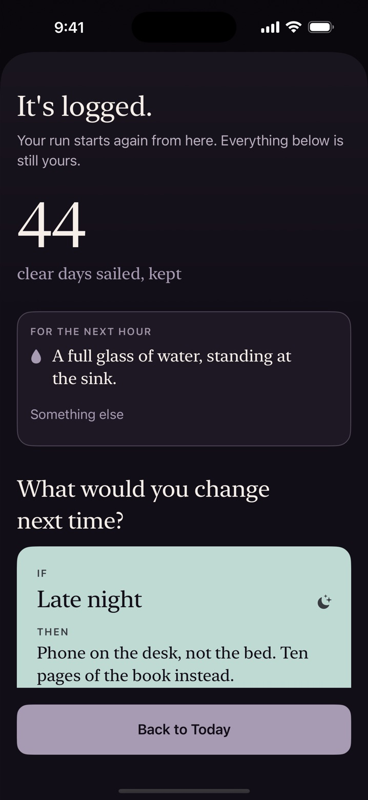

What to do after a slip
Close the tab, change room and do one small physical thing, like a glass of water or five minutes outside. Then, once you're calmer, write down when it happened and what came just before it. A slip is data, and it doesn't erase any of the days you've already had.
If this has just happened, you can stop reading after the first section. The rest will still be here tomorrow.
The next ten minutes
- Close whatever is open. Put the phone somewhere out of reach, ideally in another room.
- Change where you are. A different room or the front step counts.
- Do one small physical thing. A full glass of water, standing at the sink. A shower at any temperature. Five minutes outside the front door.
That's all. You don't need to work anything out tonight, and you don't need to promise anything.
The next hour
This is the part people tend to underestimate. A slip is one event, and the thought that often follows is "that's it, I've ruined it, so I may as well carry on." Researchers who studied people quitting smoking gave that reaction a name, the abstinence violation effect. That research is older and wasn't about porn, so hold it loosely. Even so, many people recognise the pattern: the verdict does more damage than the event.
So the job for the next hour is only to avoid passing a verdict.
- Say what happened in plain words. "I slipped at 11. I was tired and on my phone in bed." That's a description. "I have no self-control" is a verdict, and it isn't information you can use.
- Go to bed, or do the next ordinary thing. Eat something if you haven't. Ordinary is the goal.
- If you feel low, say so to someone, or use one of the options below. You don't have to give details.
Tomorrow morning: read the data
When you're calm, spend five minutes on four questions. Write the answers down, because memory smooths these over.
- When and where? Time of day, room, device.
- What came before? Tired, stressed, bored, lonely, drinking, an argument? Look at the few hours beforehand, not just the last minute.
- Where was the last easy exit? There's usually a moment when stopping would have been fairly simple. Putting the phone on a charger in another room, logging out, sending a text.
- What's one small change to make that exit easier? One. Not a new regime.
Change the plan, not yourself
If the same situation keeps showing up, that's useful. It tells you where your plan needs work. Turn your answer into an if-then plan:
If it's late and I'm in bed with my phone, the phone goes on the kitchen charger and the book on my pillow opens.
Plans of this shape have good support across many kinds of goal, though they haven't been tested on porn specifically. The free plan builder helps you write one and print it. If a filter would have helped, here are the free Screen Time steps.
What about my streak?
Many apps treat a slip as a return to zero, and that framing can make the verdict louder. Your earlier days happened. The urges you rode out happened, and you still know what you learned from them. Count however helps you. If a resetting number is motivating, keep it. If it sends you spiralling, try counting total clear days instead, which only ever goes up.

That's how Ballast is built. Log a slip and it offers a few small things for the next hour, and the day after, it reminds you the attempt is intact. Clear days never reset, your current run is shown second, and a slip appears on your route as an ordinary mark. You're never shown an offer at that moment. All of this is free.
When to look for more help
Ballast is a self-tracking and educational tool, not treatment. None of these is a diagnosis, but any one is a fair reason to book a conversation: you've tried to cut back several times and it keeps coming back; it's eating into sleep, work or time with people; it has become the main way you deal with stress or low mood; or you feel low or anxious most days.
- A therapist. Look for someone who works with CBT or ACT and is comfortable talking about sex.
- Your GP or family doctor. A good first stop if you're unsure. They can check what else might be going on and refer you on.
- SMART Recovery. Free peer meetings, online and in person, built on practical CBT-style tools.
- SAA. A twelve-step fellowship with free meetings in many countries and online.
If things feel very dark: if you are having thoughts of harming yourself, contact your local emergency services or a crisis line now. In the US, call or text 988. Elsewhere, findahelpline.com lists free lines by country.
Questions
Does a slip mean I'm back to day one?
Only if you decide to count that way. The days you already had still happened, and what you learned from them is still yours. Some people keep a run counter; others find total clear days more honest and easier to live with.
What's the difference between a slip and giving up?
A slip is one event. Giving up is a decision about what it means. You can have the first without the second, and the next morning's five minutes of notes is one way to keep them apart.
Should I tell someone?
If you have someone you trust, it often makes this feel lighter, and you don't need to give details. It's your call. If there's no one you want to tell, a therapist or a peer group such as SMART Recovery is a private place to start.
When should I get more help?
If slips keep coming despite real effort, or it's eating into sleep, work or relationships, or you feel low most days, it's a fair reason to talk to someone qualified. That isn't a sign you've done badly. If you are having thoughts of harming yourself, contact emergency services or a crisis line now.
Sources
- Curry S, Marlatt GA, Gordon JR. Abstinence violation effect: validation of an attributional construct with smoking cessation. J Consult Clin Psychol, 1987.
- Gollwitzer PM, Sheeran P. Implementation intentions and goal achievement: a meta-analysis. Adv Exp Soc Psychol, 2006.